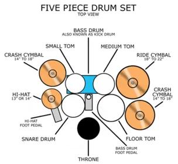
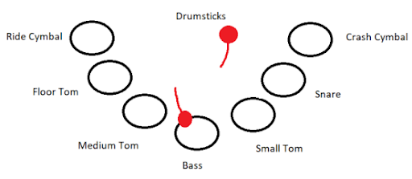
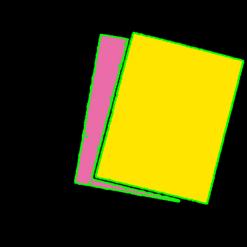

Drumz - Virtual Drum Simulator
Joseph DiNiso, Enzo Saba, Steven ShaumadineFall 2021 ECE 4554/5554 Computer Vision: Course Project
Virginia Tech
Abstract
Our goal is to implement a portable augmented reality drumset. Using computer vision techniques and live webcam footage, we will build a fluid drumset simulator.Introduction
A portable drum set can be created using computer vision to track a player’s placement and force applied to a surface by physical drumsticks and output the corresponding sound. The output sounds depend on which surface the drum sticks impact and the speed at which the player moves the drum sticks to calculate the impact on the surface.Approach
Our basic approach is simple. We want to track the players’ movements with the drumsticks in the video feed and the velocity of the drumsticks before impacting a virtual surface, or also known as one of the virtual drums. To succeed in accurately detecting a player’s motions with the drumsticks, we would need to make some assumptions about the drumsticks the player is using. Before loading the virtual drums program, we will require the player to disclose the color of their drumstick to the program so that the program can distinguish the drums from the background. This gives the player the freedom to choose among the available options for drumsticks in their immediate vicinity. The program will check to make sure it can distinguish the drumsticks from the background before proceeding to running the program. Possible scenarios where the program may not be able to differentiate drumsticks include the drumstick colors are not unique with respect to the background, drumsticks are too small, etc. If the program can not differentiate the drumsticks, it will recommend to the player to choose larger drumsticks with brighter colors that are different from the colors of its surroundings. Assuming the player does this, the program requires the player to disclose the drumstick color again and try to detect the drumsticks again. Should the program succeed, the player is ready to start playing the drums. The only other assumption we will make about the player is that they are located in the center of the screen. This is because to fully encapsulate our vision of the virtual drum, the player should be able to play anywhere without requiring much material.The virtual drums themselves (the surfaces the players will strike with the drumsticks to produce a noise) are virtual and can only be seen on screen. To an onlooker, the player would appear to be striking the air with drumsticks. The program detects the location of the drumsticks and if they fall within the circular threshold in the video feed then the drumsticks’ velocity is inputted to a function that will display the corresponding sound. These thresholds placed in the video feed to reflect each of the virtual drums in the drumsets cannot be constant between video feeds unless we were to make another assumption about the players’ location within the video feed. Instead, we will make the virtual drums’ locations in the video feed relative to the players’ distance from the camera. Should the camera detect the player is further away, the thresholds would decrease in size and vice versa for a player that is closer to the camera. The different surfaces produced by the program will represent different drum types (e.g. bass, snare, etc.) as seen in figure 1 below and their locations will correspond to those of an actual drum set from the player’s point of view. The point of view of the program can be seen in figure 2 below. The actual drum set we plan on implementing deprecates the typical drum set for simplicity

Figure 1: Typical Drum Set

The player hits the bass drum
To determine when a drumstick has hit a virtual surface we will use one main detector; when the surface is occluded by the tracked drumstick. As seen in figure 3 below, the player’s right drumstick has occluded the virtual surface of the bass drum so a bass sound with intensity corresponding to the velocity with which the drumstick entered the surface would be outputted. The drumsticks’ velocity is always tracked. The reading for velocity is taken by calculating the difference between the drumsticks position during a time interval. This interval will have to be determined during testing and will be smaller than a second. The volume of the beat will be determined by the velocity of the drumstick once the drumstick has hit the surface.

Example color thresholding

Example of contour detection
Experiments and results
Our goal for this project is to use as few external sources of code and data as possible, we wish to collect and write as much of the project ourselves. Because we believe that the data needed for our project is fairly unique, the entirety of data collected will be from our own recordings. We will however not be implementing all of the code used for the project, we will mainly be using NumPy and OpenCV for our image processing and application of computer vision algorithms because they run significantly faster than any Python implementation of our own doing. This is because they are written in C++ and are compiled to be as efficient as possible. Because this is a live simulation, our code will need to run as fast as possible, so in the case where an algorithm we implement does not run fast enough on Python we will consider writing it in C++ and making Python bindings.Data will be collected by simulating intended user actions, such as banging drumsticks on the surfaces and playing different combinations of notes. In order to have robust testing, we will make sure to test for the various different edge cases that often occur in computer vision applications. These include dark footage, image noise, and any other sources of error often found in image processing.
Successful implementation would result in smooth audio playing in response to the user’s actions (e.g. when the user hits the surface with the drumsticks a sound is immediately played, random sounds do not play without cause, etc.). As well, we would like to test our implementation on other people who did not develop the project and were given limited instructions as to how it works; this is because we would like to make a user-friendly interface that does not require much training. Other determiners of success are fast processing times, we wish to create an algorithm that can run on a normal laptop smoothly without any visible lag. One way that we can improve this is by only processing every 3rd frame, but displaying them at 60FPS to avoid long computation times. The project will be deemed successful if a fluid drum set simulator can be created that is both fun, responsive, and can display various different computer vision algorithms such as thresholding, contour detection, motion and velocity estimation, and collision detection.